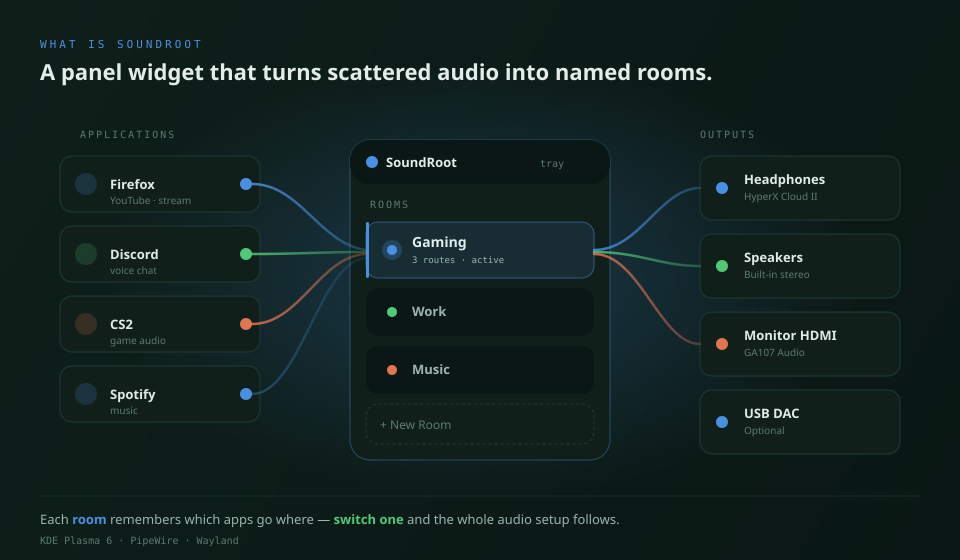
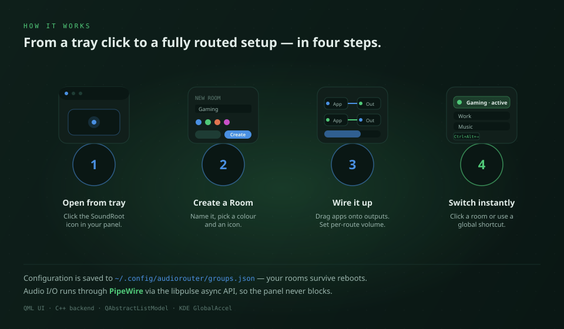

01 · The idea
What is SoundRoot

SoundRoot is a KDE Plasma 6 panel widget (a plasmoid) for Linux desktops running PipeWire. It sits in the system tray and gives you one place to decide which application plays through which output device.
Instead of opening pavucontrol every time you switch headphones for speakers, you build named audio rooms — presets like Gaming, Work or Stream — and switch the entire routing setup with one click or a global keyboard shortcut.
It is open source under GPL-2.0-or-later, currently shipped as v0.8.0-beta, and runs entirely on your machine — no accounts, no telemetry, no cloud.
Form
Panel widget
Lives in the KDE system tray, popup UI on click.
Stack
QML + C++
Qt 6, KDE Frameworks 6, libpulse async API.
Audience
Power users
Gamers, streamers, podcasters, multi-device setups.
02 · The flow
How it works

SoundRoot does not invent a parallel audio system. It talks to PipeWire through the libpulse asynchronous API, listens for sink and stream changes, and builds a live picture of the apps and devices on your machine.
When you wire an application to an output, SoundRoot moves that stream to the corresponding sink. When you switch rooms, the widget walks through the room's saved routes and re-applies them in one batch. Configuration is persisted to a JSON file so your setup survives reboots.
03 · Vocabulary
Core concepts
- Audio Room
- A named preset that owns a colour, an icon, and a list of routes. Switching a room replays its routing on top of whatever apps are running.
- Route
- A connection from a source application (a sink-input) to one output sink, with its own volume value (0–150 %).
- Sink & Sink-Input
- PipeWire/PulseAudio terms. A sink is an output device, a sink-input is an audio stream produced by an application.
- Many-to-many routing
- One app can be wired to several outputs at once, and one output can receive multiple apps. The visual board uses colour-coded wires so you can read the topology at a glance.
04 · Step by step
User workflow
- Open the widget from the system tray icon.
- Press + New Room, give it a name, colour and icon.
- Drag a wire from any running application to any output device.
- Adjust per-route volume independently of the system master.
- Activate the room with the toggle — the routing applies in one batch.
- Switch rooms later by clicking another room or using a global shortcut.
05 · Hands on the keys
Keyboard shortcuts
Shortcuts are registered through KDE GlobalAccel and can be changed under System Settings → Shortcuts, or directly in SoundRoot's settings dialog.
| Action | Default |
|---|---|
| Activate widget (as if clicked) | Ctrl + Shift + K |
| Next room | Ctrl + Alt + → |
| Previous room | Ctrl + Alt + ← |
06 · Where things live
Configuration file
All rooms, routes and per-route volumes are stored in a single JSON file in your home directory. You can back it up, version it or copy it between machines.
# Path ~/.config/audiorouter/groups.json # Rough shape { "groups": [ { "name": "Gaming", "color": "#4a90e2", "icon": "audio-headphones", "routes": [ { "app": "firefox", "sink": "alsa_output.headphones", "volume": 0.85 }, { "app": "discord", "sink": "alsa_output.speakers", "volume": 0.60 } ] } ] }
The exact field set may evolve between beta releases. Treat the file as authoritative for your local install, not as a stable public API yet.
07 · What you need
Requirements
- Linux with KDE Plasma 6
- PipeWire with the PulseAudio compatibility layer (
pipewire-pulse) - Qt 6, KDE Frameworks 6,
libpulse - CMake 3.20+ and Extra CMake Modules (only for building from source)
08 · Under the hood
Architecture in four layers
QML interface
Plasmoid contents, popup, routing board, room list, settings dialog. Pure declarative UI bound to backend models.
Models — QAbstractListModel
GroupListModel, RouteListModel, SinkInputModel, SinkModel — reactive lists consumed by QML.
C++ backend — AudioBackend
State, persistence to groups.json, route application, integration with KDE GlobalAccel for shortcuts.
Audio API — libpulse async
Talks to PipeWire through the PulseAudio compatibility layer. Asynchronous so the UI never blocks while sinks and streams change.
09 · When it misbehaves
Troubleshooting
The widget appears but the device list is empty
Check that pipewire-pulse is running. SoundRoot relies on the PulseAudio compatibility layer, so a pure ALSA-only setup will not be detected. Try systemctl --user status pipewire-pulse.service.
Switching a room does nothing
Make sure the application is actually playing audio — SoundRoot routes active sink-inputs. Apps that only open the audio device on demand (some games, browsers without an active tab) will not appear until they emit sound.
My shortcuts do not fire
Open the SoundRoot settings dialog and re-record the shortcut, or check for conflicts under System Settings → Shortcuts → Custom Shortcuts. KDE GlobalAccel will refuse silently if another app already owns the key combination.
I want to start over
Quit Plasma's widget instance, delete ~/.config/audiorouter/groups.json, then re-add the plasmoid. You will land on a clean state.
10 · Boundaries
Privacy & permissions
- • SoundRoot runs locally; no network calls, no analytics, no accounts.
- • It only reads the audio session graph and writes to
~/.config/audiorouter/groups.json. - • It does not capture, record or upload any audio.
See the full privacy policy.
11 · Get involved
Source & contributing
SoundRoot is open source under GPL-2.0-or-later. Issues, ideas and pull requests are welcome — especially for the items still on the Nice to Have list (auto-switch on device hotplug, virtual-device creation from the UI, smoother onboarding).